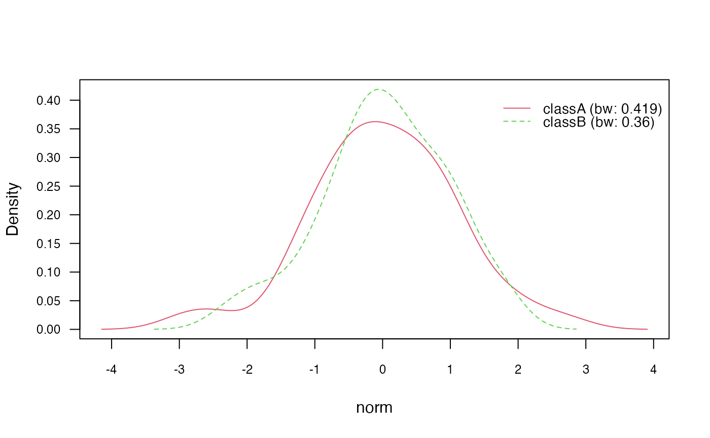
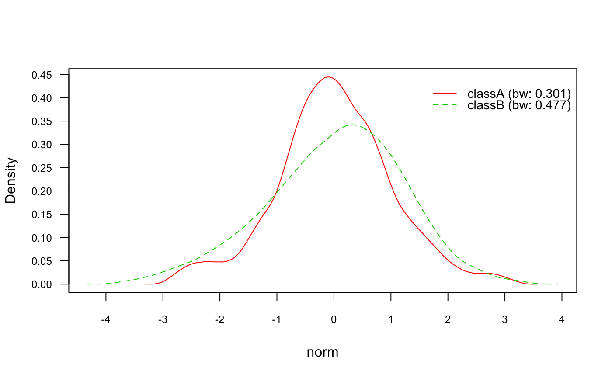
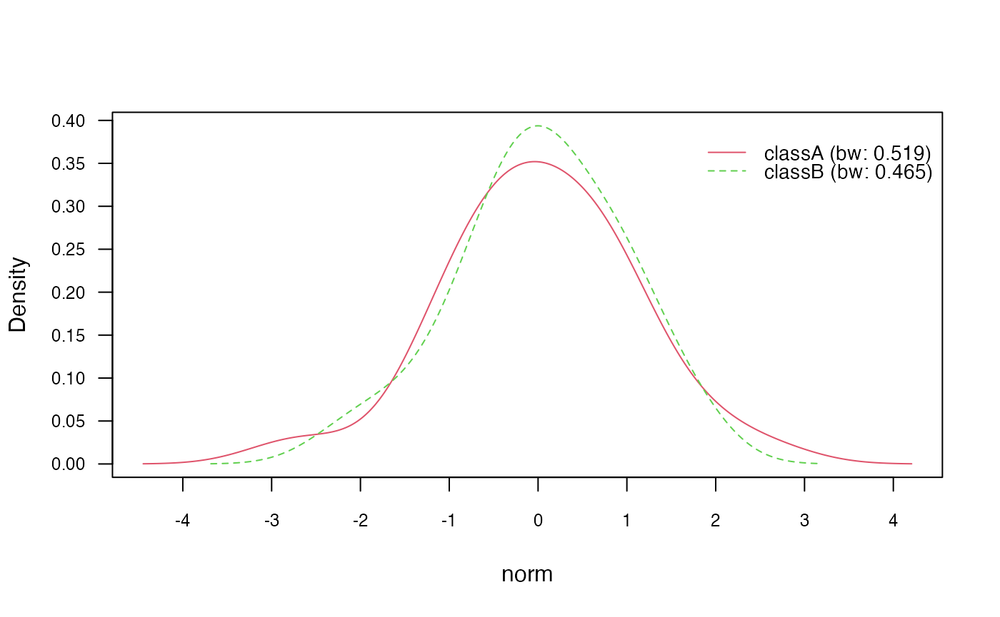
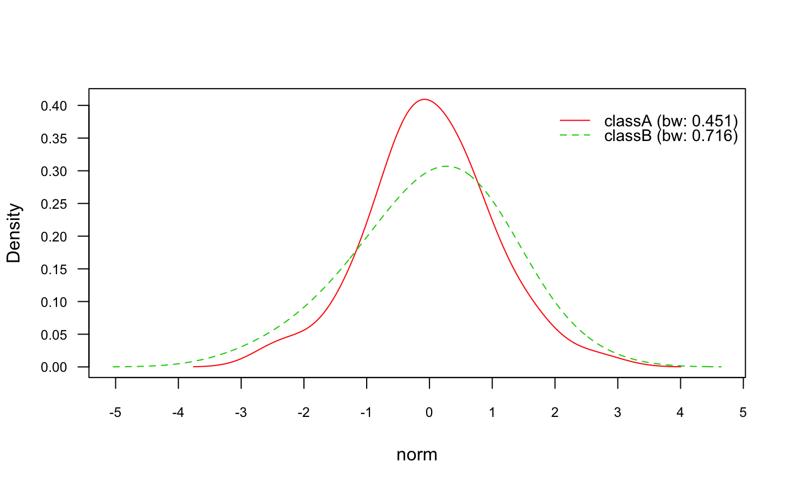
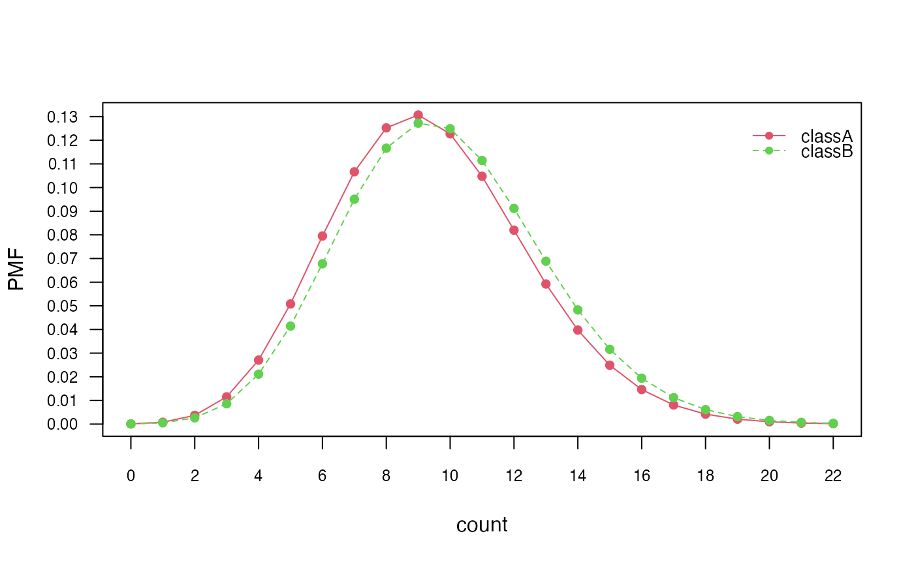
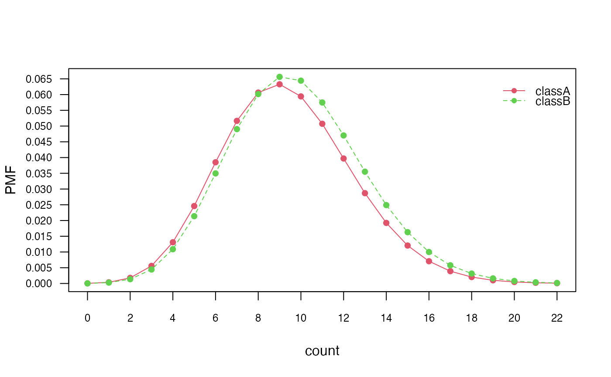

vignettes/naivebayes.Rmd
naivebayes.RmdThe naivebayes package provides a user friendly
implementation of the Naïve Bayes algorithm via formula interlace and
classical combination of the matrix/data.frame containing the features
and a vector with the class labels. All functions can recognize missing
values, give informative warnings and more importantly - they know how
to handle them. In following the basic usage of the main function
naive_bayes() is demonstrated. Examples with the
specialized Naive Bayes classifiers can be found in this
article.
To demonstrate the usage of the naivebayes package, we
will use an example dataset. The dataset is simulated and consists of
various variables, including a class label, a binary variable, a
categorical variable, a logical variable, a normally distributed
variable, and a count variable.
The dataset contains 100 observations, and we split it into a training set (train) consisting of the first 95 observations and a test set (test) consisting of the remaining 5 observations. The test set excludes the class label variable (class) to simulate new data for classification.
## naivebayes 1.0.0 loaded## For more information please visit:## https://majkamichal.github.io/naivebayes/
# Simulate example data
n <- 100
set.seed(1)
data <- data.frame(class = sample(c("classA", "classB"), n, TRUE),
bern = sample(LETTERS[1:2], n, TRUE),
cat = sample(letters[1:3], n, TRUE),
logical = sample(c(TRUE,FALSE), n, TRUE),
norm = rnorm(n),
count = rpois(n, lambda = c(5,15)))
train <- data[1:95, ]
test <- data[96:100, -1]
# Show first and last 6 rows in the simulated training dataset
head(train)## class bern cat logical norm count
## 1 classA B b FALSE -0.04470914 6
## 2 classB B a TRUE -1.73321841 16
## 3 classA B b FALSE 0.00213186 4
## 4 classA A b FALSE -0.63030033 20
## 5 classB A b FALSE -0.34096858 7
## 6 classA A c FALSE -1.15657236 12
tail(train)## class bern cat logical norm count
## 90 classB A b FALSE -1.02454848 16
## 91 classA A a TRUE 0.32300650 5
## 92 classA B c TRUE 1.04361246 18
## 93 classB A c TRUE 0.09907849 7
## 94 classB B b TRUE -0.45413691 7
## 95 classA B a TRUE -0.65578185 4
# Show the test dataset
print(test)## bern cat logical norm count
## 96 B c FALSE -0.03592242 16
## 97 A b TRUE 1.06916146 9
## 98 B a FALSE -0.48397493 13
## 99 A b FALSE -0.12101011 4
## 100 A c FALSE -1.29414000 13The naivebayes package provides a convenient formula
interface for training and utilizing Naïve Bayes models. In this
section, we demonstrate how to use the formula interface to perform
various tasks.
# Train the Naïve Bayes model using the formula interface
nb <- naive_bayes(class ~ ., train)
# Summarize the trained model
summary(nb)##
## ================================= Naive Bayes ==================================
##
## - Call: naive_bayes.formula(formula = class ~ ., data = train)
## - Laplace: 0
## - Classes: 2
## - Samples: 95
## - Features: 5
## - Conditional distributions:
## - Bernoulli: 2
## - Categorical: 1
## - Gaussian: 2
## - Prior probabilities:
## - classA: 0.4842
## - classB: 0.5158
##
## --------------------------------------------------------------------------------
# Perform classification on the test data
predict(nb, test, type = "class")## [1] classA classB classA classA classA
## Levels: classA classB
# Equivalent way of performing the classification task
nb %class% test## [1] classA classB classA classA classA
## Levels: classA classB
# Obtain posterior probabilities
predict(nb, test, type = "prob")## classA classB
## [1,] 0.7174638 0.2825362
## [2,] 0.2599418 0.7400582
## [3,] 0.6341795 0.3658205
## [4,] 0.5365311 0.4634689
## [5,] 0.7186026 0.2813974
# Equivalent way of performing obtaining posterior probabilities
nb %prob% test## classA classB
## [1,] 0.7174638 0.2825362
## [2,] 0.2599418 0.7400582
## [3,] 0.6341795 0.3658205
## [4,] 0.5365311 0.4634689
## [5,] 0.7186026 0.2813974
# Apply helper functions
tables(nb, 1)## --------------------------------------------------------------------------------
## :: bern (Bernoulli)
## --------------------------------------------------------------------------------
##
## bern classA classB
## A 0.5000000 0.5510204
## B 0.5000000 0.4489796
##
## --------------------------------------------------------------------------------
get_cond_dist(nb)## bern cat logical norm count
## "Bernoulli" "Categorical" "Bernoulli" "Gaussian" "Gaussian"
# Note: By default, all "numeric" (integer, double) variables are modeled
# with a Gaussian distribution.In addition to the formula interface, the naivebayes
package also allows training Naïve Bayes models using a matrix or data
frame of features (X) and a vector of class labels (class). In this
section, we demonstrate how to utilize this approach.
# Separate the features and class labels
X <- train[-1]
class <- train$class
# Train the Naïve Bayes model using the matrix/data.frame and class vector
nb2 <- naive_bayes(x = X, y = class)
# Obtain posterior probabilities for the test data
nb2 %prob% test## classA classB
## [1,] 0.7174638 0.2825362
## [2,] 0.2599418 0.7400582
## [3,] 0.6341795 0.3658205
## [4,] 0.5365311 0.4634689
## [5,] 0.7186026 0.2813974In the code above, we first separate the features from the train
dataset by excluding the first column (which contains the class labels).
The features are stored in the matrix or data frame X, and
the corresponding class labels are stored in the vector
class.
Next, we train a Naïve Bayes model using the
naive_bayes() function by providing the feature matrix or
data frame (x = X) and the class vector
(y = class) as input arguments. The trained model is stored
in the nb2 object.
To obtain the posterior probabilities of each class for the test
data, we use the %prob% operator with the nb2
object. This allows us to get the probabilities without explicitly using
the predict() function.
By using the matrix/data.frame and class vector approach, you can directly train a Naïve Bayes model without the need for a formula interface, providing flexibility in handling data structures.
Kernel density estimation (KDE) is a technique that can be used to
estimate the class conditional densities of continuous features in Naïve
Bayes modeling. By default, naive_bayes() function assumes
a Gaussian distribution for continuous features. However, you can
explicitly request KDE estimation by setting the parameter
usekernel = TRUE. KDE estimation is performed using the
built-in density() function in R. By default, Gaussian
smoothing kernel and Silverman’s rule of thumb as bandwidth selector are
used.
In the following code snippet, we demonstrate the usage of KDE in Naïve Bayes modeling:
# Train a Naïve Bayes model with KDE
nb_kde <- naive_bayes(class ~ ., train, usekernel = TRUE)
summary(nb_kde)##
## ================================= Naive Bayes ==================================
##
## - Call: naive_bayes.formula(formula = class ~ ., data = train, usekernel = TRUE)
## - Laplace: 0
## - Classes: 2
## - Samples: 95
## - Features: 5
## - Conditional distributions:
## - Bernoulli: 2
## - Categorical: 1
## - KDE: 2
## - Prior probabilities:
## - classA: 0.4842
## - classB: 0.5158
##
## --------------------------------------------------------------------------------
get_cond_dist(nb_kde)## bern cat logical norm count
## "Bernoulli" "Categorical" "Bernoulli" "KDE" "KDE"
nb_kde %prob% test## classA classB
## [1,] 0.6498111 0.3501889
## [2,] 0.2279460 0.7720540
## [3,] 0.5915046 0.4084954
## [4,] 0.5876798 0.4123202
## [5,] 0.7017584 0.2982416
# Plot class conditional densities
plot(nb_kde, "norm", arg.num = list(legend.cex = 0.9), prob = "conditional")
# Plot marginal densities for each class
plot(nb_kde, "norm", arg.num = list(legend.cex = 0.9), prob = "marginal")In the above code, we first train a Naïve Bayes model using the
formula interface and set usekernel = TRUE to enable KDE
estimation. We then use the summary() function to obtain a
summary of the trained model, including information about the
conditional distributions.
Next, we use the plot() method to visualize the class
conditional densities (prob = "conditional") and the
marginal densities for each class (prob = "marginal"). This
provides insights into the estimated densities of the continuous
features.
Additionally, we can customize the KDE estimation by adjusting the
kernel and bandwidth selection. The following
sections demonstrate how to (1) change the kernel, (2) bandwidth
selector, and (3) adjust the bandwidth:
In the naive_bayes() function, you have the flexibility
to specify the smoothing kernel to be used in KDE by using the
kernel parameter. There are seven different smoothing
kernels available, each with its own characteristics and effects on the
density estimation. Here are the available kernels (referenced from
help("density")):
gaussian: (Default) This is the default kernel and
assumes a Gaussian (normal) distribution. It is commonly used and
provides a smooth density estimate.
epanechnikov: This kernel has a quadratic shape and
provides a more localized density estimate compared to the Gaussian
kernel.
rectangular: This kernel has a rectangular shape and
provides a simple, non-smooth density estimate.
triangular: This kernel has a triangular shape and
provides a moderately smooth density estimate.
biweight: This kernel has a quartic shape and
provides a more localized density estimate compared to the Gaussian
kernel.
cosine: This kernel has a cosine shape and provides
a smooth density estimate.
optcosine: This kernel is an optimized version of
the cosine kernel and provides a slightly more localized density
estimate.
You can refer to visualizations of these kernel functions on Wikipedia’s Kernel Functions page: https://en.wikipedia.org/wiki/Kernel_%28statistics%29#Kernel_functions_in_common_use.
By specifying the desired kernel using the kernel
parameter in the naive_bayes() function, you can choose the
smoothing approach that best suits your data and modeling
objectives.
# Change Gaussian kernel to biweight kernel
nb_kde_biweight <- naive_bayes(class ~ .,
train,
usekernel = TRUE,
kernel = "biweight")
nb_kde_biweight %prob% test## classA classB
## [1,] 0.6564159 0.3435841
## [2,] 0.2350606 0.7649394
## [3,] 0.5917223 0.4082777
## [4,] 0.5680244 0.4319756
## [5,] 0.6981813 0.3018187
The bandwidth selector is a critical component of KDE as it
determines the width of the kernel and influences the smoothness of the
estimated density function. You can specify the bandwidth selector using
the bw parameter. Here are the available bandwidth
selectors, described based on the R documentation
help("bw.nrd0"):
nrd0 (Silverman’s rule-of-thumb): This is the
default bandwidth selector in R. It estimates the bandwidth based on
Silverman’s rule-of-thumb, which takes into account the sample size and
variance of the data. It provides a good balance between oversmoothing
and undersmoothing.
nrd (variation of the rule-of-thumb): This is a
variation of Silverman’s rule-of-thumb, which adjusts the estimate based
on a factor of 1.06. It is slightly more conservative than
nrd0.
ucv (unbiased cross-validation): This selector uses
unbiased cross-validation to estimate the bandwidth.
bcv (biased cross-validation): This selector uses
biased cross-validation to estimate the bandwidth.
SJ (Sheather & Jones method): This selector
implements the Sheather-Jones plug-in method.
Different bandwidth selectors can result in different levels of smoothness in the estimated densities. It can be beneficial to experiment with multiple selectors to find the most appropriate one for your specific scenario.
nb_kde_SJ <- naive_bayes(class ~ .,
train,
usekernel = TRUE,
bw = "SJ")
nb_kde_SJ %prob% test## classA classB
## [1,] 0.6127232 0.3872768
## [2,] 0.1827263 0.8172737
## [3,] 0.5784831 0.4215169
## [4,] 0.7031048 0.2968952
## [5,] 0.6699132 0.3300868
You can further adjust the bandwidth by specifying a
factor using the adjust. This allows you to additionally
control the smoothness of the estimated densities.
nb_kde_adjust <- naive_bayes(class ~ .,
train,
usekernel = TRUE,
adjust = 1.5)
nb_kde_adjust %prob% test## classA classB
## [1,] 0.6773673 0.3226327
## [2,] 0.2428289 0.7571711
## [3,] 0.6081023 0.3918977
## [4,] 0.5601651 0.4398349
## [5,] 0.6910347 0.3089653
Class conditional distributions of non-negative integer predictors
can be modelled with Poisson distribution. This can be achieved by
setting usepoisson=TRUE in the naive_bayes()
function and by making sure that the variables representing counts in
the dataset are of class integer.
is.integer(train$count)## [1] TRUE
nb_pois <- naive_bayes(class ~ ., train, usepoisson = TRUE)
summary(nb_pois)##
## ================================= Naive Bayes ==================================
##
## - Call: naive_bayes.formula(formula = class ~ ., data = train, usepoisson = TRUE)
## - Laplace: 0
## - Classes: 2
## - Samples: 95
## - Features: 5
## - Conditional distributions:
## - Bernoulli: 2
## - Categorical: 1
## - Poisson: 1
## - Gaussian: 1
## - Prior probabilities:
## - classA: 0.4842
## - classB: 0.5158
##
## --------------------------------------------------------------------------------
get_cond_dist(nb_pois)## bern cat logical norm count
## "Bernoulli" "Categorical" "Bernoulli" "Gaussian" "Poisson"
nb_pois %prob% test## classA classB
## [1,] 0.6708181 0.3291819
## [2,] 0.2792804 0.7207196
## [3,] 0.6214784 0.3785216
## [4,] 0.5806921 0.4193079
## [5,] 0.7074807 0.2925193
# Class conditional distributions
plot(nb_pois, "count", prob = "conditional")
# Marginal distributions
plot(nb_pois, "count", prob = "marginal")
The code snippet checks if the count variable in the
train dataset is of class integer. Then, it fits a Naïve
Bayes model using the Poisson distribution by specifying
usepoisson = TRUE in the naive_bayes()
function.